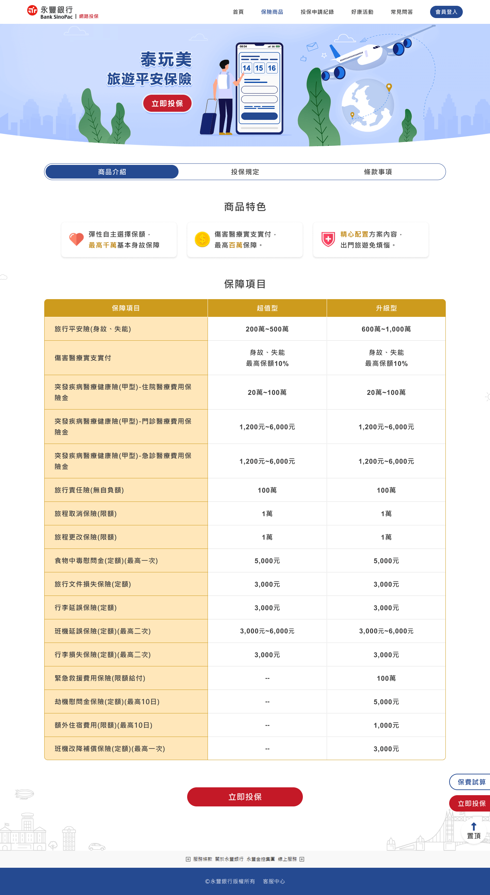
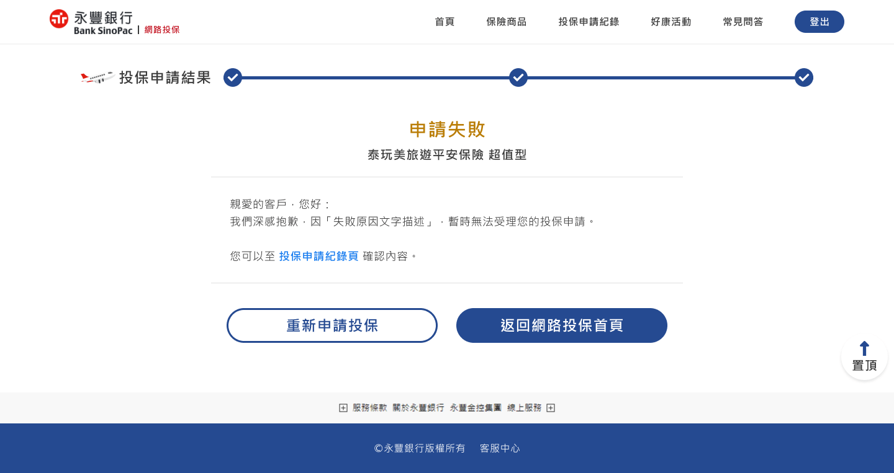
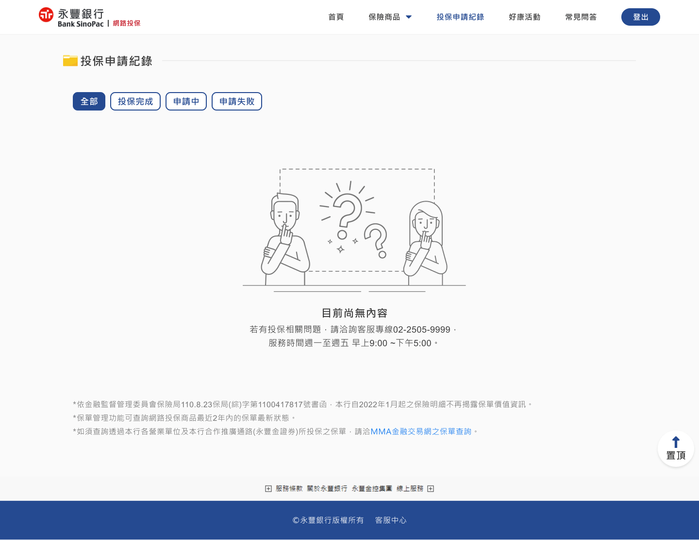
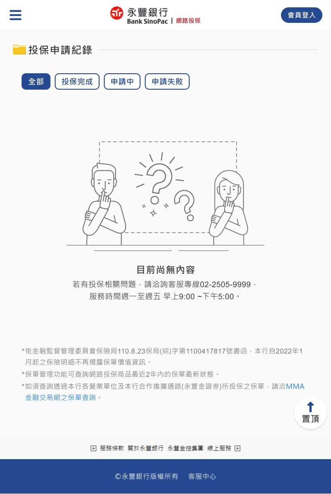
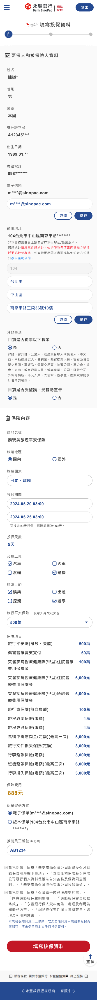

投保網站 介面設計
回作品集
一、定義服務取向和客戶屬性
使視覺風格貼合產業和市場，有基礎共識和標準執行設計。
以保險為主題


二、精煉產品面向
統整服務取向、客戶屬性，明確視覺風格方向。
三、依產品面向發想視覺概念

以永豐CIS企業識別規範，分析網站用色。

永豐藍：符合理智、安穩的面向，作為網站主色。
永豐紅：具強烈視覺引導，避免大量使用造成視覺疲勞，因此做為網站強調色。

- 以淺色系為網站背景色，如：白、灰白，使整體氛圍明亮清爽。
- 圓潤化介面圖形。
- 卡通風格插畫配圖。

- 以低飽和度的冷色系，如：淺藍、深藍，避免網站活潑鮮豔。
- 排版層級明確、版面整齊有序。
- 商標配色之外，考量其他用色。
- 配圖風格，考量2種以上表現方式。
四、以競品範例，確認風格樣貌
除文字描述外，以相似視覺風格的網站，和永豐業務單位討論，形成更確切的共識。
國泰人壽：低飽和度色彩、淺色系網站背景、圓潤化介面圖形。

南山人壽：卡通風格插畫配圖。
保險醫療站：排版層級明確、版面整齊有序、卡通風格插畫配圖。

五、以最小可行性，作視覺規劃最終確認
以定義的網站形容詞為方向，產出首頁進行視覺提案，取得永豐業務單位認同，接續完成其他頁面和設計規範。
網站首頁


接續瀏覽桌機設計稿
已瀏覽完 設計稿 規劃流程
桌機設計稿-投保流程
以螢幕解析度寬1440px為例。
Index1_1.2 首頁-旅平險(泰安產險內容)

P1_1.1 保險商品-泰安旅平險 理想狀態

P2_1.2 投保資料_泰安旅平險 理想狀態

P3_1.2 核保資料_旅平險 理想狀態

P4_1.1 確認保險資料 理想狀態

P5_1.2 繳納保費-信用卡 理想狀態

P6_1.2 身分驗證 理想狀態

P7_1.1 投保申請結果 初始狀態

P7_1.2 投保申請結果 局部資料狀態

R1_1.1 投保申請紀錄 理想狀態

R1_1.2 投保申請紀錄 空白狀態

已瀏覽完 桌機設計稿
前往figma瀏覽完整設計稿
平板設計稿-投保流程
以螢幕解析度寬768px為例。
Index1_1.2 首頁-旅平險(泰安產險內容)

P1_1.1 保險商品-泰安旅平險 理想狀態

P2_1.2 投保資料_泰安旅平險 理想狀態

P3_1.2 核保資料_旅平險 理想狀態

P4_1.1 確認保險資料 理想狀態

P5_1.2 繳納保費-信用卡 理想狀態

P6_1.2 身分驗證 理想狀態

P7_1.1 投保申請結果 初始狀態

P7_1.2 投保申請結果 局部資料狀態

R1_1.1 投保申請紀錄 理想狀態

R1_1.2 投保申請紀錄 空白狀態

已瀏覽完 平板設計稿
前往figma瀏覽完整設計稿
手機設計稿-投保流程
以螢幕解析度寬430px為例。
Index1_1.2 首頁-旅平險(泰安產險內容)

P1_1.1 保險商品-泰安旅平險 理想狀態

P2_1.2 投保資料_泰安旅平險 理想狀態

P3_1.2 核保資料_旅平險 理想狀態

P4_1.1 確認保險資料 理想狀態

P5_1.2 繳納保費-信用卡 理想狀態

P6_1.2 身分驗證 理想狀態

P7_1.1 投保申請結果 初始狀態

P7_1.2 投保申請結果 局部資料狀態

R1_1.1 投保申請紀錄 理想狀態

R1_1.2 投保申請紀錄 空白狀態

已瀏覽完 手機設計稿
前往figma瀏覽完整設計稿